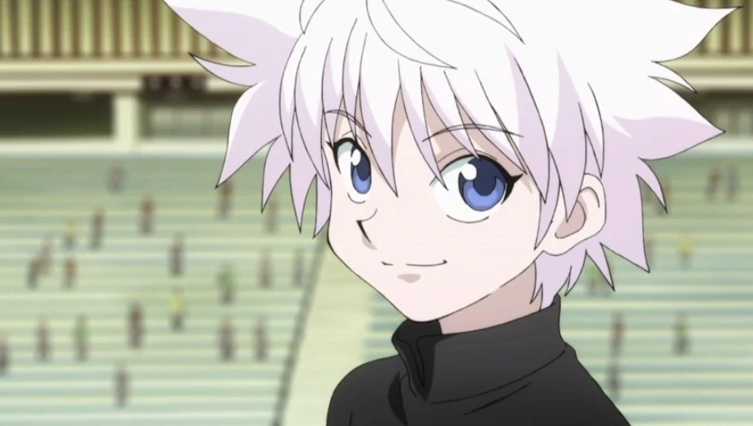
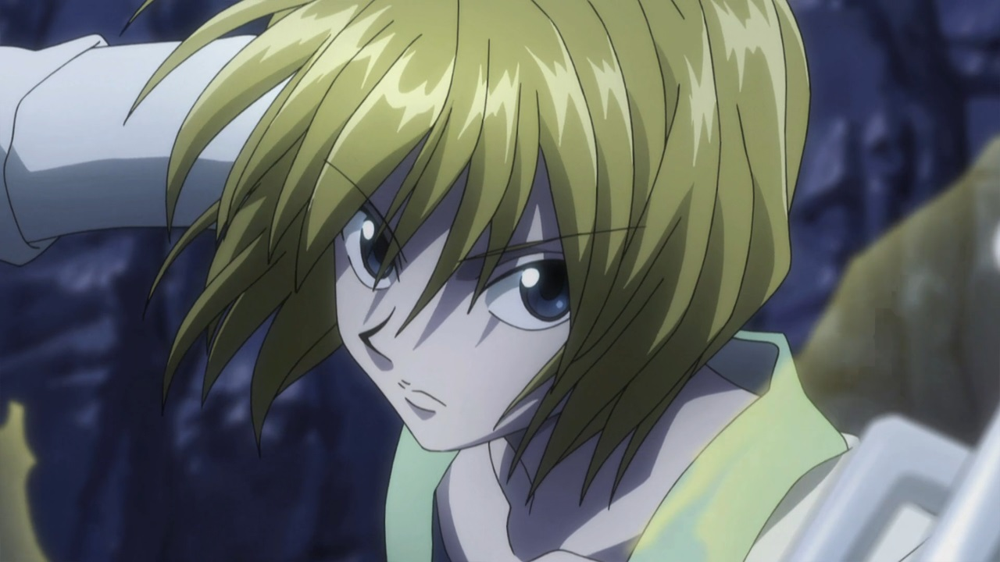
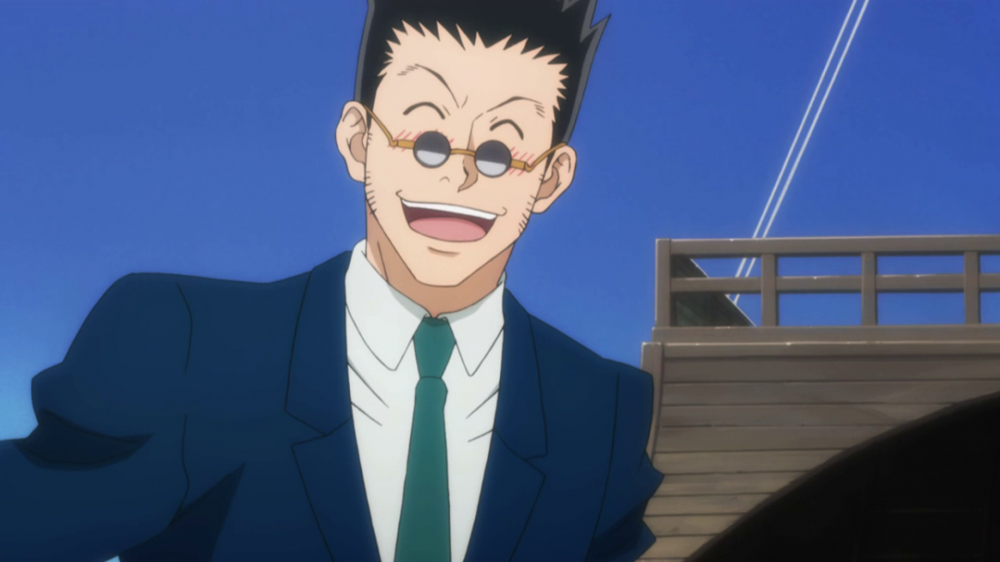

Gon é um um garoto simples e amigável que está em busca de uma aventura. Ele não é bom em matemática. Gon, por ter passado muito tempo em locais selvagens na infância, é capaz de lidar bem com animais. Ele é um Intensificador que são conhecidos como pessoas de personalidade simplistas e que possuem grande determinação. Gon tem sentidos extremamente aprimorados, podendo sentir odor de coisas ou pessoas a longas distâncias. Um dos motivos que levou ele a querer se tornar um Hunter é descobrir o quão profunda e interessante é tal profissão que levou seu pai a abandonar até mesmo a família.
Killua

Inicialmente, Killua é introduzido como um personagem que parece ser semelhante à Gon, mas diferente, ao mesmo tempo; insolente, alegre e cheio de ideias perversas. Ele também é um dos personagens que pensam mais rápido na série e muitas vezes analisa uma situação com grande facilidade e precisão. Ele tem muita confiança em suas próprias habilidades, muitas vezes, é humilde sobre isso; mas quando alguém o elogia, especialmente Gon, ele fica facilmente envergonhado.
Kurapika

Kurapika é um indivíduo equilibrado e inteligente, possuindo um vasto conhecimento. Ele é reticente; não se abre para as pessoas facilmente e é bastante crítico. Sua distância de outras pessoas, inicialmente, o mantém moralista e equilibrado, mas seu coração foi envenenado com tristeza e ódio. Tendo sido traumatizado por perder todos que amava com a idade de treze anos, Kurapika fecha seu coração para novas pessoas e continua a ser introvertido para manter o foco em seu objetivo. Embora que por fora Kurapika afirme que ele deseja se tornar um Blacklist Hunter o seu objetivo final é capturar o bando de ladrões que massacraram sua família, sua fúria lhe permite comprometer a sua moralidade pessoal e aprofundar o lado sórdido da sociedade.
Leorio

Leorio não é um que se recusa ou se retira quando confrontado independente das adversidades na batalha. É um aliado leal, confiável, que valoriza muito os laços de amizade, ele age como o "irmão mais velho" do grupo. Muitas vezes ele fornece o alívio cômico; Killua às vezes o ridiculariza por sua idade relativamente mais velha, embora ele jura que sua aparência é a de um mero adolescente. Sua natureza impulsiva e imprudente por vezes causou mais problemas para as pessoas ao seu redor. Pode ser visto que seu relacionamento mais próximo no grupo é com Kurapika, porque eles passaram mais tempo um com o outro.